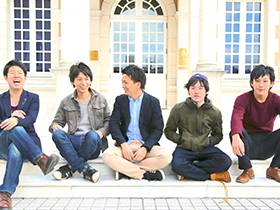

ABOUT

PAS-POLは世界一周団体TABIPPOのモノづくりブランドです。
もっとたくさんの若者に旅をしてほしい、という想いで、本や雑貨などのモノづくりをいろは出版と一緒に行っています。
僕たちが作りたいのは、持っているだけで旅に出たくなるモノ。持っているだけでワクワクするモノです。
言うならば、新しい時代の”パスポート”のようなものを作りたいと想い、PAS-POLという名前をつけました。
そして、人と人がつながるこんな時代だからこそ、僕たちはみんなで作り上げていくモノづくりを追求していきたいと思います。

世界一周団体TABIPPO
全員が世界一周を経験したメンバーが学生時代につくった組織がTABIPPOです。設立して４年半、２０１４年４月に株式会社になりました。創業メンバーは３名。とにかく旅が好きで、たくさんの人に旅を広めたい。そう思っています。
TABIPPO WEB SITE